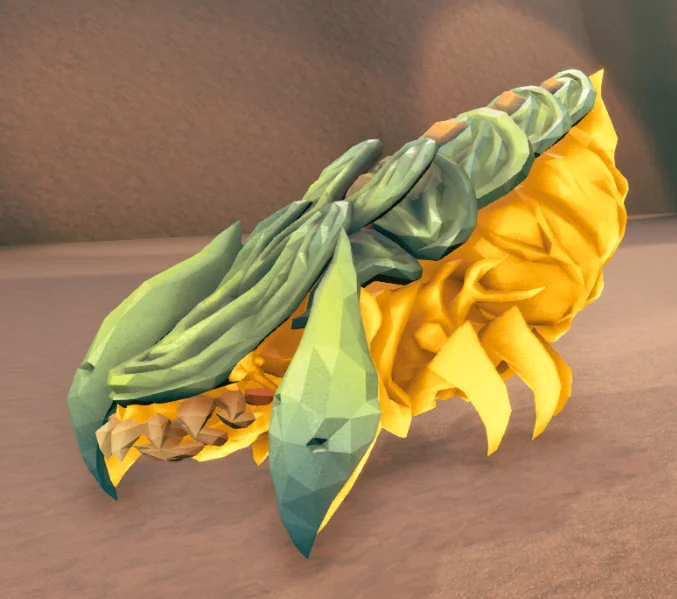

敌人配置 · Enemies / EnemiesNoSync
该模块包含敌人描述符。模块名称可以是 Enemies 或 EnemiesNoSync，但二者不可同时使用。具体选择取决于你是否希望自己的难度支持“公开匹配”，即允许未安装 CD2 的玩家加入游戏。
英文原文
This module contains the enemy descriptors. The name of the module can be either Enemies or EnemiesNoSync, but never both at the same time. The choice of which to use depends on if you want your difficulty to be pubbable, that is, to be played with players that do not have CD2 installed:
- CD2 的某些功能需要同步到客户端，例如敌人的缩放控制（
Scale）或外观（材质）自定义。Enemies可将这些特性同步至客户端，但会强制客户端必须安装 CD2，否则任务开始时将断开连接。英文原文
Some CD2 features require being replicated to the clients, such as theScaleenemy control or the customization of enemy looks (materials).Enemiescan replicate these characteristics to players, but in exchange it will force the clients to use CD2 or they will suffer a disconnect upon mission start. EnemiesNoSync不会向客户端同步任何数据。使用EnemiesNoSync的难度配置可兼容所有客户端，无论其是否安装了 CD1、CD2，或两者皆未安装。选择EnemiesNoSync即表示你未使用任何需要同步的功能。英文原文
EnemiesNoSyncdoesn't do replication to clients. A difficulty withEnemiesNoSyncis compatible with all clients, regardless of whether they use CD1, CD2 or nothing at all. When you useEnemiesNoSyncyou are implicitly stating that you didn't use any features that require replication.
要查看哪些功能需要使用 Enemies 模块的，请参考@Spy 提供的以下指南：《On Pubbing With CD2》。
英文原文
To see which features require the Enemies module, please check the following guide by @Spy: On Pubbing With CD2.
Descriptor controls
| Name | Type |
|---|---|
| CanBeUsedForConstantPressure | Boolean |
| CanBeUsedInEncounters | Boolean |
| CustomVeterans 自定义变种 |
See Veteran control below. |
| DifficultyRating | Float |
| MaxSpawnCount | Int |
| MinSpawnCount | Int |
| Rarity | Float |
| Significance | String, takes ("Swarmer", "Normal", "Critical", "Critter") |
| SpawnAmountModifier 生出数量修正因子 |
Float |
| SpawnRarityModifiers 生成稀有度修正因子 |
* |
| SpawnSpread 生成分布 |
Float |
| UsesSpawnRarityModifiers 是否使用生成稀有度修正因子 |
Boolean |
| UsesVeteranLarge 是否使用大型敌人的变异率 |
See Veteran control below. |
| VeteranClasses 变种分类 |
See Veteran control below. |
Enemy controls
[[]]内的字段是特殊的子模块，可以在以下部分找到。
英文原文
Fields inside [[]] are special submodules that can be found in the sections that follow.
| Name | Type | Comments |
|---|---|---|
| Alert 敌人是否为警戒状态 |
Boolean | If True, the enemy will spawn aggroed to the player. It is True by default in enemies spawned by a wave spawner. |
| AttackDamageMultiplier 敌人伤害倍率（包括近战/远程） |
Float | Multiplies an enemy's melee and projectile damage. Can be used with EnemiesNoSync. |
| Base | ED | The enemy will have the specified ED as base. Check the table in Resources for the vanilla descriptors. |
| CanPlayerStandOn 敌人是否允许玩家站立 |
Boolean | |
| CaveLeech 水蛭 |
[[CaveLeech]] | See the CaveLeech module below for special Cave Leech controls. |
| Courage 勇气值（恐惧抗性）[恐惧值 * （1-勇气值）= 恐惧概率] |
Float | |
| Direct 底层属性 |
[Int, Float, Bool, Pcol] | Special control that can expose enemy properties (see example below). |
| DisplayName 命名 |
String | |
| Elite 是否精英 |
Float | Bool | This field accepts a float number indicating the percentage of Elite enemies that will spawn for that descriptor. |
| EnemyHealthScaling 敌人血量倍率 |
String | |
| ForceEliteBase 强制精英（需要一个本来能精英的 ED） |
ED | See Elite variants for all enemies below. |
| Grabber 捕手异虫蝇 |
[[Grabber]] | See the Grabber module below for special Grabber controls. |
| IsBossFight 是否为 boss 战 |
Boolean | If True, the enemy will have a boss bar in the player UI similar to the vanilla dreadnoughts. The name in the bar will be the descriptor's DisplayName. |
| JellyBreeder 水母饲育控制 |
[[JellyBreeder]] | See the JellyBreeder module below for special breeder controls. |
| Heal | Float | A positive number N will heal the enemy N hps. A negative number will do N dps to the enemy. This control has an advanced mode specified below. |
| HealthMultiplier 血量倍率 |
Float | |
| HealthRaw 血量 |
Float | |
| Materials 材质 |
[[Materials]] | A list of UE4 materials that will be applied to different parts of the enemy. Each enemy is different with regard to how many materials will it accept and how will they be applied, so trial and error is usually needed to get the expected results. |
| MEV | Special | |
| Movement 移动 |
[[Movement]] | See the Movement submodule below. |
| NoSpawnWithin …… 范围内不生成 |
Float | Removes enemies that spawn within the specified distance of the player, in cm. |
| Outline 轮廓 |
[[Outline]] | Allows setting a permanent outline (as if someone had pinged) to an enemy. See below in the outline section for the options. |
| Projectile 发射物 |
[[Projectile]] | See Projectiles. |
| PST_CritBonusDamage 暴击伤害加成倍率 |
Int | Multiplies the normal damage in case of a Critical Hit (see PST_CritBonusDamage below). Default of 1.2 (20% bonus). |
| PST_CritChance 暴击概率 |
Int | Chance of both bugs dealing Critical Damage to players or the other way around (no way to have only one direction). Defaults to 0 (0% chance). |
| PST_DamageFromPlayers 玩家伤害调整 |
Int | Multiplies all damage sources considered to be from players (including things like temperature shock damage). Defaults to 1. |
| PST_ExplodeOnDeath 效果为易爆内脏 |
Int | When the enemy dies it explodes as if it was a Volatile Bugs mission. |
| PST_MovementSpeed | Int | Modifies enemy speed. This is a legacy pawn stat. See the Movement module below for a more customizable module new in CD2. |
| Resistances 抗性 |
[[Resistances]] | See the Resistances submodule below. |
| Scale 尺寸比例 |
Float | |
| Spawner | [[Spawner]] | See Spawners below. |
| ShowHealthBar 血条显示 |
Boolean | |
| StaggerImmunityWindow 免疫眩晕时间 |
Float | |
| StaggerDurationMultiplier 眩晕持续时间倍率 |
Float | |
| Temperature 温度 |
[[Temperature]] | See the Temperature submodule below. |
| TimeDilation | Float | Speeds up the enemy's attack and movement. Please note that time-dilating enemies can be a source of desync. |
| UsesBiomeVariants 是否使用群系变种 |
Boolean | Enables/disables the biome variants of enemies (eg. Frost Praetorian in Glacial Strata). |
| WeakpointHP 弱点血量 |
Float |
Heal advanced mode
Heal 模块可以接受以下高级设置：
英文原文
Heal can accept the following advanced settings:
InitialRate：设置初始治疗量（如果为正）或初始流血量（如果为负）。英文原文
InitialRate: sets the initial healing if positive or bleed if negative.FinalRate：设置在SwitchAfter时间后使用的值。英文原文
FinalRate: sets the value that will be used afterSwitchAftertime has passed.SwitchAfter：转换到FinalRate的时间，计时从敌人生成开始。英文原文
SwitchAfter: the time at which theFinalRatewill be used. Starts counting on enemy spawn.
轮廓控制 · Outline special control
该模块允许为敌人设置一个永久的轮廓，就像有人标记了它一样。
英文原文
This module allows to give a permanent outline to an enemy, as if someone had pinged it.
通常用于标记危险的敌人，如饲育水母或远程威胁，以便你能穿墙看到它们。
英文原文
It is usually used to mark dangerous enemies like breeders or ranged threats so you can see them through walls.
它接受两个字段：Enable（true/false）和 Type，Type 接受以下字段之一：Enemy（红色轮廓，默认）、Friendly、Neutral 和 Item。
英文原文
It accepts two fields: Enable, which accepts a boolean, and Type, which accepts one of the following: Enemy (red outline, default), Friendly, Neutral and Item.
提示：Type 这个字段实际不太好用——即使你设置了它，轮廓显示的仍然是该敌人本身的种类。不要指望用它改变轮廓外观。
"ED_Spider_ExploderTank": {
"Outline": {
"Enabled": true,
"Type":"Enemy"
}
}Direct special control 特殊控制
Direct 允许直接更改 UE4 中定义的敌人属性。许多 CD2 未直接开放的属性可以通过 Direct 进行更改，比如：
英文原文
Direct allows to directly change enemy properties as defined in UE4. Many properties that are not directly exposed
by CD2 can be changed with Direct. For example:
"ED_Spider_ExploderTank": {
"Direct": {
"Int:NumClusterBombs": 200
}
}"ED_Spider_Exploder": {
"Movement": {
"MaxPawnSpeed": 5,
"MaxAcceleration": 5,
"MaxBrakingDeceleration": 10,
"AlignDirectionSpeed": 10,
"AlignToTargetMinRequiredAngle": 1,
"StrafeSpeed": 5
},
"Direct": {
"PCol:Mesh": true
},
"CanPlayerStandOn": true,
"Alert": true
}"ED_JellyBreeder": {
"Direct": {
"Bool:Capsule.bHiddenInGame": false,
"PCol:Capsule": true
},
"CanPlayerStandOn": true
}在 Direct 页面，你可以找到虽然没有穷尽但仍比较完整的所有已知直接控制项的清单
英文原文
In the Direct page you can find a non-exhaustive but fairly complete compilation of all the known direct controls.
让所有敌人都有精英变种 · Elite variants for all enemies
将 Elite 设置为 true 或某个浮点数，仅对原版已具备精英变种的敌人直接生效，如护卫、捕手蝇、禁卫、大自爆、速射和三颚等等。对于其他敌人，必须通过 ForceEliteBase 指定一个已有精英变种的敌人描述符作为模板。例如，以下代码片段创建了一个精英脓毒异虫，如果没有 ForceEliteBase 则无法生成其精英变种：
英文原文
Setting Elite to true or to some float number will only work directly for those enemies that have a vanilla elite variant: guards, grabbers, praetorians, bulks, menaces and trijaws. For the rest of the enemies, an elite base must be specified by setting ForceEliteBase to some existing ED that has an elite variant. As an example, the following snippet creates an elite septic spreader, which won't work without the ForceEliteBase:
"ED_Elite_Septic_Spreader": {
"Base": "ED_Spider_Lobber",
"Elite": true,
"ForceEliteBase": "ED_Grabber"
}你选择的 ForceEliteBase 能够影响你想要自定义精英变种的敌人的属性，尽情尝试
英文原文
The type of elite specified as base can modify the characteristics of your custom elite descriptor, feel free to experiment.
变种控制 · Veteran control
变种控制允许一些敌人变异为其他敌人。在原版游戏中，变种系统是固定的（例如，禁卫是通过 DifficultySetting 中的 VeteranLarge 设置以一定概率变异为暴君的）。CD2 改进了该机制，允许玩家创建自定义的变种类别。目前有两种方式与变种系统进行交互：
英文原文
Veterans allow some enemies to promote to other enemies. In vanilla the veteran classes are hardcoded (for example, oppressors are praetorians that got promoted with a probability given by the VeteranLarge setting in DifficultySetting). CD2 improves the system by allowing the player to create their own custom veteran classes. There are currently two ways to interact with the veteran system:
VeteranClasses接受一个描述符列表，以控制基础敌人可以变异为哪些敌人。VeteranClasses使用VeteranNormal的概率，除非将UsesVeteranLarge设置为 true。以下代码片段展示了一个例子：英文原文
VeteranClassesaccepts a list of descriptors that the base descriptor can promote to.VeteranClassesusesVeteranNormalprobablities unlessUsesVeteranLargeis set to true. The following snippet shows an example:
"DifficultySetting": {
"VeteranNormal": {
[
"Weight": 1,
"Min": 0.2,
"Max": 0.2
]
}
},
"Enemies": {
"ED_Spider_Grunt": {
"VeteranClasses": [
"ED_Spider_Shooter",
"ED_Spider_Spitter"
]
}
}通过此设置，小战士每次生成时都有 20%的概率变种为吐酸异虫/吐丝异虫。这种方法的一个缺点是，VeteranNormal 和 VeteranLarge 是全局设置（即所有使用该配置的都采用这个值）。
英文原文
With these settings, Grunts will promote to acid and web spitters with a 20% chance each time they spawn. One disadvantage of this approach is that VeternalNormal and VeteranLarge are global.
- 第二种方式是
CustomVeterans，它绕过了VeteranNormal和VeteranLarge的设置，允许你单独指定变异率。以下代码片段功能与之前的完全相同，但现在概率仅作用于战士异虫，而非全局生效：英文原文
The second way isCustomVeterans, which bypasses theVeternalNormalandVeteranLargesettings and lets the user specify the probability directly. The following snippet whould work exactly as the one before, but now the probabilities are contained to the grunt descriptor instead of being global:
"ED_Spider_Grunt": {
"CustomVeterans": {
"ED_Spider_Grunt": 0.8,
"ED_Spider_Shooter": 0.1,
"ED_Spider_Spitter": 0.1
}
}CustomVeterans 还允许通过 Mutator 来决定要生成哪些敌人，从而实现更精细的控制。一个典型用例是：限制某一类型的变种数量：
英文原文
CustomVeterans also allows specifying a mutator to decide which enemies to spawn, which can give more control. One useful use case is to limit the amount of veterans of a certain type:
"ED_Spider_Grunt": {
"CustomVeterans": {
"Mutate": "RandomChoice",
"Choices": [ "ED_Spider_Buffer", "ED_Spider_Grunt", "ED_Spider_Grunt_Guard", "ED_Spider_Grunt_Attacker" ],
"Weights": [
{
"Mutate": "IfFloat",
"Value": { "Mutate": "EnemyCount", "ED": "ED_Spider_Buffer" },
"<": 5,
"Then": 30,
"Else": 0
},
1,
1,
1
]
}
},当地图上典狱长数量未达到 5 只时，该代码片段会赋予其极高的生成概率；一旦达到 5 只，战士异虫变异为典狱长的概率将降至零。
英文原文
This snippet gives a very high chance of wardens to spawn until there are 5 of them in the map, at which point the probability to get more warden promotions will drop to 0.
自定义材质 · Custom materials
CD2 允许在每个敌人的描述符中指定一系列材质来定制敌人的外观。此功能需要使用 Enemies 模块，客户端才能看到变化。（未安装 CD2 的客户端不支持）
英文原文
CD2 allows specifying a list of Materials in individual enemy descriptors to customize how the enemies look. This feature requires Enemies for clients to be able to see the changes.
示例：创建一个橙色的脓毒异虫。
英文原文
Example: create an orange septic.
{
"Enemies": {
"ED_Spider_Lobber": {
"Materials": ["M_Halloween_Light_Orange", "M_Halloween_Light_Orange"]
}
}
}
每个敌人有一定数量的材质槽位，游戏中有数百种可用的材质，但并非所有材质都能在敌人身上生效。测试并寻找新材质的最佳方式是，在沙盒工具中生成敌人并进行更改，即可立刻看到变化。@TheBrain 在文档中详细说明了操作流程，如果你希望将材质槽留空以使用默认材质，使用""或 Default 都可以。
英文原文
Each enemy has a certain number of material slots. There are hundreds of available materials, but not all of them work when used in enemies. The best way to test and find new materials for your enemies is spawning the enemy in Sandbox Utilities and changing them, and you will be able to see the change in real time. This procedure is explained in this document by @TheBrain.
If you wish to leave a slot with the default material, both "" and Default work.
抗性 · Resistances
Resistances 模块的字段，这些控制项可以用来定义敌人对所有类型伤害的抗性，DamageMultiplier 是适用于所有伤害类型的通用设置。
英文原文
Fields for the resistances submodule. These controls can be used to define resistances to all types of damage in the game. DamageMultiplier is the catch-all for all damage types.
| Name | Type |
|---|---|
| InvulnerableToNonDefinedResistances 免疫未定义的伤害类型 |
Boolean |
| DamageMultiplier 受到的所有类型伤害的倍率 |
Float |
| FireDamageMultiplier 火伤害倍率 |
Float |
| CorrosiveDamageMultiplier 腐蚀伤害倍率（典型的如：泥枪） |
Float |
| ElectricDamageMultiplier 电伤害倍率 |
Float |
| ColdDamageMultiplier 冰伤害倍率 |
Float |
| KineticDamageMultiplier 动能伤害倍率 |
Float |
| PhysicalDamageMultiplier 物理伤害倍率（近战） |
Float |
| ExplosionDamageMultiplier 爆炸伤害倍率 |
Float |
| InternalDamageMultiplier 内部伤害倍率 |
Float |
| RadiationDamageMultiplier 辐射伤害倍率 |
Float |
| PoisonDamageMultiplier 毒伤害倍率（典型的如：屁雷） |
Float |
| PiercingDamageMultiplier 穿刺伤害倍率（典型的如：弩） |
Float |
移动 · Movement
以下值均为倍率，默认值为 1。描述由 @emctwo 提供。
英文原文
The following values are all multipliers with defaults of 1. The following descriptions are provided by @emctwo.
| Name | Type | Description |
|---|---|---|
| MaxPawnSpeed 最大速度 |
Float | Multiplies the maximum speed of the enemy. |
| StrafeSpeed 侧移速度 |
Float | Multiplies enemy speed when strafing (enemy movement changes to strafe when they are close to a player). |
| MinSlowdownAngle 最小转向减速角度 |
Float | When enemies turn they tend to slow down; this field multiplies the minimum angle for the speed change. |
| MaxSlowdownAngle 最大转向减速角度 |
Float | When enemies turn they tend to slow down; this field multiplies the maximum angle for the speed change. |
| MaxStrafeDistance 最大侧移起始距离 |
Float | The distance to a player where the enemy starts to strafe. |
| AlignDirectionSpeed 转向速度 |
Float | Multiplies how quickly the enemy turns. |
| FleeSpeedBoostMultiplier 恐惧逃离速度 |
Float | Multiplies enemy speed when feared. |
| MaxAcceleration 最大加速度 |
Float | Multiplies how quickly the enemy can change speed. |
| MaxBrakingDeceleration 最大减速度 |
Float | Affects how quickly the enemy slows down, which mostly changes how far away from the player they start to slow down. |
| PathfinderSize 寻路距离大小 |
Currently Unsupported | |
| AlignToTargetMinRequiredAngle 转向对齐最小所需角度 |
Float | The minimal angle required between the enemy's forward direction and the player position to start turning. |
| PathfinderPreference 寻路优先级 |
Currently Unsupported |
水蛭 · CaveLeech
水蛭的特殊控制
英文原文
Special controls for cave leeches.
| Name | Type | Default |
|---|---|---|
| BiteDamage 撕咬伤害 |
Float | 10 |
| BitesPerSecond 每秒撕咬次数 |
Float | 1 |
| MaxDistanceXY 水平最大索敌距离 |
Float | 1000 |
| GrapDelay 抓取启动延迟 |
Float | 0.1 |
| TentacleSpeed 触手伸出速度 |
Float | 600 |
| TentacleRetractSpeed 触手收回速度 |
Float | 1100 |
| TentaclePullSpeed 触手拖拽速度 |
Float | 2000 |
| TentacleDropPlayerSpeed 触手释放玩家速度 |
Float | 1500 |
| TentacleDropGroundDistance 触手释放玩家的地面距离阈值 |
Float | 300 |
| MaxDropPlayerDuration 抓取玩家的最大持续时间 |
Float | 2 |
| RevivedGracePeriod 复活后免疫抓取的宽限期 |
Float | 10 |
捕手异虫蝇 · Grabber
控制捕手异虫蝇
英文原文
Special controls for grabbers.
| Name | Type | Default |
|---|---|---|
| WanderingSpeed 游荡速度 |
Float | 250 |
| WanderingAcceleration 游荡加速度 |
Float | 1000 |
| ChaseSpeed 追击速度 |
Float | 750 |
| ChaseAcceleration 追击加速度 |
Float | 4000 |
| CarrySpeed 携带玩家移动速度 |
Float | 500 |
| CarryAcceleration 携带玩家加速度 |
Float | 3000 |
| FleeSpeed 逃跑速度 |
Float | 800 |
| FleeAcceleration 逃跑加速度 |
Float | 1000 |
| ExtraUpForce 额外向上推力 |
Float | 15 |
| PreventGrabAfterSpawn 生成后禁止抓取的持续时间 |
Float | 3 |
| GrabTime 抓取持续时间 |
Float | 20 |
| DamageTimeLimit 伤害判定时间窗口 |
Float | 4 |
| DamageThreshold 伤害判定阈值 |
Float | 25 |
| RevivedGravePeriod 复活后免疫抓取的宽限期 |
Float | 5 |
水母 · JellyBreeder
控制水母
英文原文
Special controls for breeders.
| Name | Type | Default | Comments |
|---|---|---|---|
| EnemyToSpawn 卵孵化后生成的敌人类型 |
ED | Can be mutated. | |
| TimeBetweenBursts 卵批次之间的生成间隔（秒） |
Float | 20 | |
| TimeBetweenEggs 同一批次内各卵的生成间隔（秒） |
Float | 3 | |
| CloseToSpawnEggTime 玩家靠近时提前开始生成卵的时间（秒） |
Float | 3 | |
| EggBurstSize 每批次生成的卵数量 |
Int | 3 | |
| MaxJellies 最大卵数量 |
Int | 25 | |
| MultiplierOnHighPlayerCount 玩家数量多时的卵生成数量倍率 |
Float | 1.5 | |
| SpawnAmount 每个卵孵化时生成的敌人数量 |
Int | 4 | |
| EggName 卵的显示名称 |
String | ||
| EggMaterial 卵的材质 |
Material | ||
| EggHealth 卵的生命值 |
Float | 125 | |
| EggSpeed 卵的移动速度 |
Float | 1.0 | |
| EggTime 卵的孵化时间（秒） |
Float | 17 |
示例：
{
"Name": "CD2 Beta 6 Test - Breeder Update",
"Enemies": {
"ED_GruntBreeder": {
"Base": "ED_JellyBreeder",
"DisplayName": "Greeder",
"Materials": [
"M_Spider_Grunt_Body_Generic",
"M_Spider_Grunt_Armor_Guard01",
"M_Spider_Grunt_Armor_Generic",
"M_Spider_Grunt_Armor_Guard01",
"M_Jelly_Breeder_Spike",
"M_Spider_Grunt_Armor_SlasherClaws"
],
"JellyBreeder": {
"EnemyToSpawn": "ED_Spider_Grunt",
"SpawnAmount": 1,
"TimeBetweenBursts": 40,
"EggBurstSize": 18,
"TimeBetweenEggs": 0.5,
"EggName": "Grunt Egg",
"EggMaterial": "M_Spider_Grunt_Armor_Guard01",
"EggHealth": 5,
"EggTime": 1
}
},
"ED_StalkerBreeder": {
"Base": "ED_JellyBreeder",
"DisplayName": "Stalker Breeder",
"ShowHealthBar": false,
"Materials": [
"M_Spider_Stalker_Camouflage",
"M_Spider_Stalker_Camouflage",
"M_Spider_Stalker_Camouflage",
"M_Spider_Stalker_Camouflage",
"M_Spider_Stalker_Camouflage",
"M_Spider_Stalker_Camouflage",
"M_Spider_Stalker_Camouflage"
],
"JellyBreeder": {
"EnemyToSpawn": "ED_Spider_Stalker",
"SpawnAmount": 1,
"TimeBetweenBursts": 40,
"EggBurstSize": 1,
"TimeBetweenEggs": 2,
"EggName": "Stalker Egg",
"EggMaterial": "M_Spider_Stalker_Camouflage",
"EggHealth": 80,
"EggTime": 40
}
}
}
}生成器 · Spawner
Spawner 是一个特殊子模块，允许任何敌人周期性生成其他敌人，并提供多种灵活的选项。它包含以下字段：
英文原文
Spawner is a special submodule that allows any enemy to periodically spawn other enemies with different flexilibity options. It contains the following fields:
| Name | Description | Default |
|---|---|---|
| OnSpawnDelay | Seconds until the first spawn 首次生成前的延迟时间（秒） |
2 |
| OnSpawnCount | Initial number of enemies to spawn 初始生成数量 |
0 |
| OnDeathCount | Number of enemies to spawn on death 宿主死亡时额外生成的数量 |
0 |
| IntervalSpawnCount | Number of enemies to spawn periodically 每次周期生成的敌人数量 |
0 |
| Interval | Time between interval spawns. Min 0.1 seconds 周期生成的时间间隔（秒） |
2 |
| ED | The descriptor to spawn 要生成的敌人描述符 |
|
| MaxSpawns | Max alive enemies to be spawned by this spawner. Not compatible with EDs with CustomVeteran 最大同时存活生成数量 |
200 |
| OnDeathKillSpawns | If true, kill all spawned enemies when the host enemy dies 宿主死亡时杀死所有已生成单位 |
False |
| OnlySpawnOnAlert | Will only spawn once the enemy is alerted 仅在敌人进入警戒状态后才生成 |
True |
以下代码片段展示了一个带有 Spawner 模块的蛭尾异虫。Spawner 将每秒生成 2 只蜂拥，直到存活 10 只为止，所有蜂拥会在蛭尾异虫死亡时一起死亡：
英文原文
The following snippet shows a stingtail descriptor with a swarmer module attached. The spawner will spawn 2 swarmers every second until 10 are alive and they will all die when the stingtail is killed:
"ED_Spider_Stinger": {
"Spawner": {
"ED": "ED_Spider_Spawn",
"IntervalSpawnCount": 2,
"Interval": 1,
"OnDeathCount": 0,
"MaxSpawns": 10,
"OnDeathKillSpawns": true
}
}所有 Spawner 模块内的字段可以被 Mutator 控制
英文原文
All fields inside the Spawner can be mutated.
温度 · Temperature
特殊的温度控制，用于改变敌人对高温和低温的反应。
英文原文
Special temperature controls to change how enemies react to heat and cold.
| Name | Type |
|---|---|
| DieIfFrozen 冰冻时立即死亡 |
Boolean |
| DieIfBurning 着火时立即死亡 |
Boolean |
| IsHeatsourceWhenOnFire 着火时作为热源 |
Boolean |
| OnFireHeatRange 着火后作为热源的作用范围 |
Float |
| BurnTemperature 点燃温度阈值 |
Float |
| DouseFireTemperature 熄灭燃烧状态温度阈值 |
Float |
| FreezeTemperature 冻结温度阈值（注意：冰冻的应该为负值） |
Float |
| UnfreezeTemperature 解冻温度阈值 |
Float |
| WarmingRate 升温率 |
Float |
| CoolingRate 降温率 |
Float |
| TemperatureChangeScale 温度变化倍率 |
Float |
| FrozenDamageBonusScale 冻结状态下的伤害加成倍率。实测：CD2 v0.13 里生效的名字是 FozenDamageBonusScale（少一个 r），本页这个拼法反而不生效；CD2 作者以后可能修掉它。 |
Float |
| MaxColdSlowdown 低温导致的最大减速比例 |
Float |
以下代码片段使用 Temperature 模块让 无畏异虫 变得可以点燃。
英文原文
Example: the following snippet use the Temperature module to make dreadnoughts ignitable.
{
"Enemies": {
"ED_Spider_Boss_Heavy": {
"Resistances": {"DamageMultiplier": 1.23, "FireDamageMultiplier": 1.2},
"Temperature": {"BurnTemperature": 100, "DouseFireTemperature": 50}
},
"ED_Spider_Boss_TwinA": {
"Resistances": {"DamageMultiplier": 1.3, "FireDamageMultiplier": 1.2},
"Temperature": {"BurnTemperature": 100, "DouseFireTemperature": 50}
},
"ED_Spider_Boss_TwinB": {
"Resistances": {"DamageMultiplier": 1.23, "FireDamageMultiplier": 1.2},
"Temperature": {"BurnTemperature": 100, "DouseFireTemperature": 50}
}
}
}资源掉落 · DropResource
令敌人在被击杀时掉落资源。这些字段上的 Mutator 会在每次敌人死亡时进行计算
英文原文
Enemies drop resources when they are killed.Mutators on these fields are evaluated between every enemy death.
| Field Name 字段名称 |
Type | Default | Description |
|---|---|---|---|
| Enable 启用与否 |
Boolean | true | Whether to drop resources when the enemy dies 决定敌人死亡时是否掉落资源 |
| Resource 资源类型 |
String | Nitra | Allowed: Nitra, Gold, Dystrum, Iron, OilShale, RedSugar 允许设置为：硝石、黄金、异镝、吸铁石、油页岩和红糖 |
| Amount 掉落资源数量 |
float | 1 | Amount of resource to drop, or hp heal amount of red sugar 掉落资源数量；若为红糖，则表示恢复的生命值量 |
| LaunchStrength 抛射力度 |
float | 1 | Strength of resource dispersal 资源掉落时的抛射力度 |
| GoombaOnly 仅限踩踏击杀 |
Boolean | False | If true, resources are only dropped if the enemy has been goomba'd 若为 true，则仅当敌人被 踩踏击杀 时才会掉落资源 |
踩踏击杀 · Goomba
允许矮人通过 跳到敌人身上 后造成伤害（马里奥）
英文原文
Allows dwarves to damage enemies by jumping/landing on top of the enemy.
| Field name 字段名称 |
Type 种类 |
Default | Description |
|---|---|---|---|
| Enable 启用与否 |
Boolean | True | |
| Cooldown 冷却时间 |
Float | 0.2 | Minimum time between successive damage to an enemy from goomba tech 对同一敌人通过 踩踏造成伤害的最小间隔时间（s） |
| MaxAngle 最大角度 |
Float | 50 | Max angle the dwarf may be away from a straight down hit to still be counted for goomba. At 180, all impact directions count. 矮人跳跃方向与垂直向下方向的最大允许夹角（单位°）。当设置为 180 时，任何方向的撞击都有效 |
| SpeedThreshold 速度阈值 |
float | 300 | Speed a dwarf must be moving before an impact is considered goomba'ing 矮人必须达到的最低下落速度，其撞击才会被判定为踩踏。 |
| FlattenAmount 压扁程度 |
Float | 0 | Amount to flatten an enemy when it is goomba'd between 0 and 0.7 敌人被踩踏时“压扁”视觉效果程度，取值范围为 0 到 0.7。 |
| DamageMultiplier 伤害倍率 |
Float | 0 | DamageMultiplier * (Speed - SpeedThreshold) + FlatDamage = damage dealt. Because speeds can be high (300-1000), this multiplier may be low. 最终伤害 = DamageMultiplier * (Speed - SpeedThreshold) + FlatDamage。由于速度值通常较高（一般在 300~1000 之间），此倍率通常设为较小数值。 |
| FlatDamage 固定伤害 |
float | 0 | Flat damage dealt regardless of speed. If not set and damagemultiplier not set, defaults to 10k damage. 与速度无关的固定伤害值。若 FlatDamage 和 DamageMultiplier 均未设置，则默认造成 10000 点伤害。 |
| DamageType 伤害类型 |
DamageType | DMG_Physical | Most or all DMG_* types supported e.g. DMG_Burn 大多数/所有 种类都支持 DMG_xxx 的语法 |